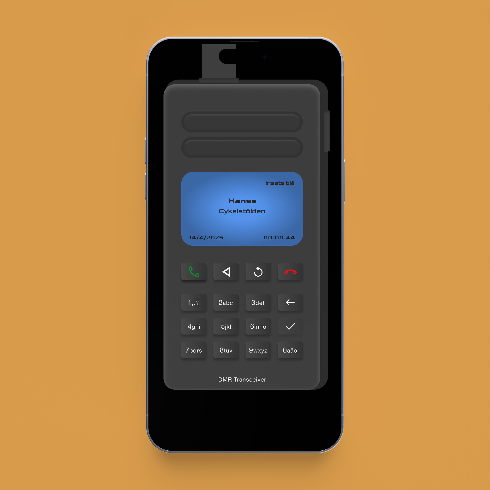
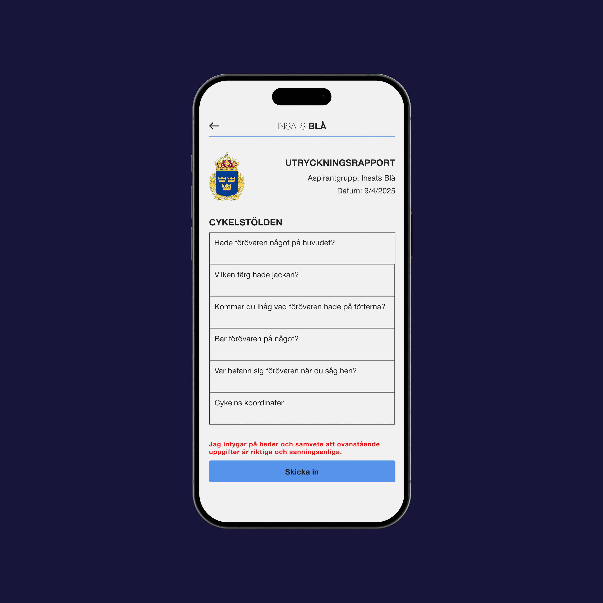
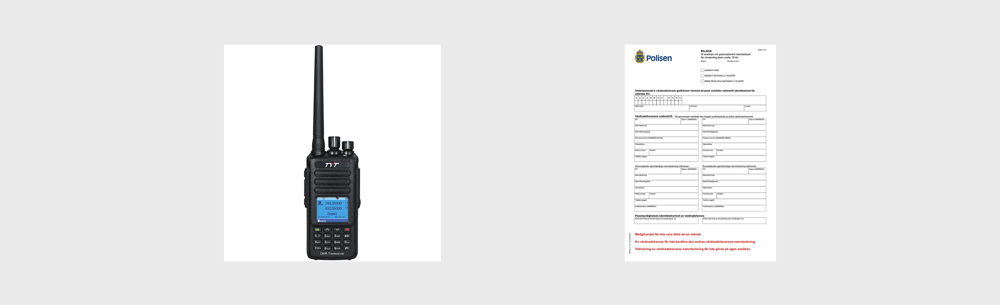
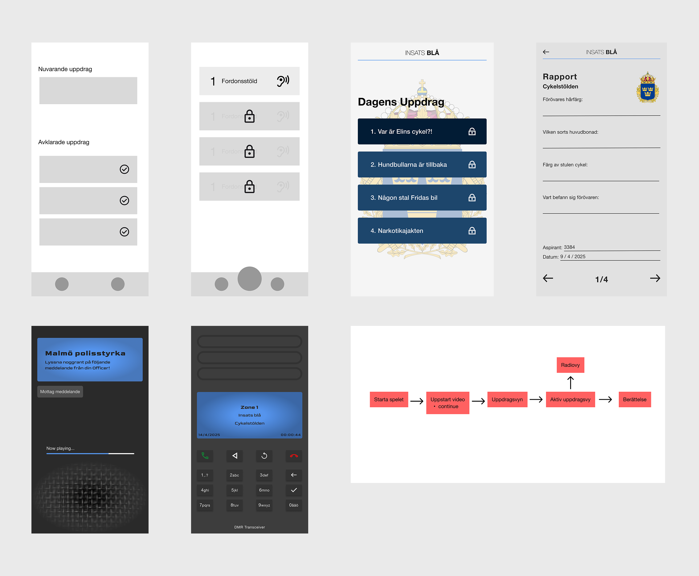
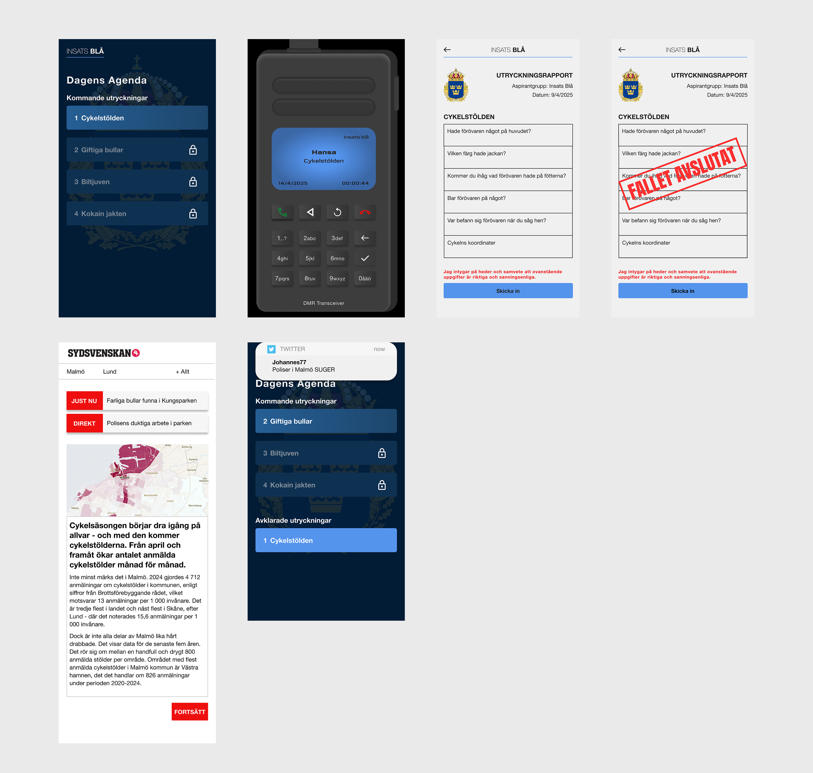

Insats Blå
A cross media cop game

Year
2025
Timeframe
7 Weeks
My Role
Co-Designer
Co-Developer
Tools
Figma
VS code
Project overview
Insats Blå is a transmedia game designed to give players insight into the everyday work of the Malmö police. Inspired by the TV series Tunna blå linjen, the project combines digital and physical elements to create an immersive, cross-media experience.
Players take on the role of a police officer and complete missions based on real-life cases. The experience is primarily driven through a web platform, enhanced with additional media such as police radio, video clips, news articles, and social media content. Physical elements, such as placed objects in real-world environments (Malmö), extend the gameplay beyond the screen and strengthen the sense of realism.
The project was developed through an iterative and collaborative process, where design decisions continuously evolved based on feedback and testing. A strong focus was placed on realism, leading to the development of key features such as a police radio interface and report system inspired by real-world references.
The final result is a cohesive transmedia experience that balances inspiration from an existing narrative with original interactive design, demonstrating how multiple mediums can work together to create a more engaging and believable user experience.



My design process
An overview of my design process

Research + Sketches
The first step in our design process was brainstorming to define a clear concept. Once the core idea was established, we moved on to research and gathering references. For example, the radio interface was inspired by real-life police radios, while the mission page drew heavily from the design of the 24/7 Fitness mobile app.
My design colleague and I shared a very clear and aligned vision of the game's visual direction, which made the process both efficient and cohesive. Throughout the project, we drew inspiration from real-life police elements, such as radio systems and police reports, grounding the experience in realism. Since the game is cross-media, existing both digitally and in real life, this design approach proved to be especially effective.


Wireframes + Iterations
After completing the research phase, we began sketching initial ideas, followed by the creation of low-fidelity wireframes. These were continuously reviewed and refined, gradually evolving into more detailed designs until we reached the final version.


Final Design
Within a seven-week timeframe, the project was completed and handed in. During this period, my design partner and I were responsible for both the design and development of the entire experience. This included everything from initial research and reference gathering to creating flowcharts, wireframes, and ultimately the final version of the game.
We implemented the project using a Deno server and successfully published the website. Although the project is no longer live due to licensing restrictions, it represents a complete end-to-end process from concept to a fully functional product.
